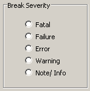

By default, a
severity level of Failure causes
a simulation break. You can change this default action permanently
by editing a modelsim.ini variable, or you can
edit the severity for the current simulation only.
Procedure
- To change this default permanently,
edit the BreakOnAssertion variable in the modelsim.ini file.
- To edit
the severity for the current simulation run only, select and
click the Message Severity tab. Check the appropriate severity level
(Figure 1) and click OK.
Figure 1. Setting Immediate
Assertion Break Severity